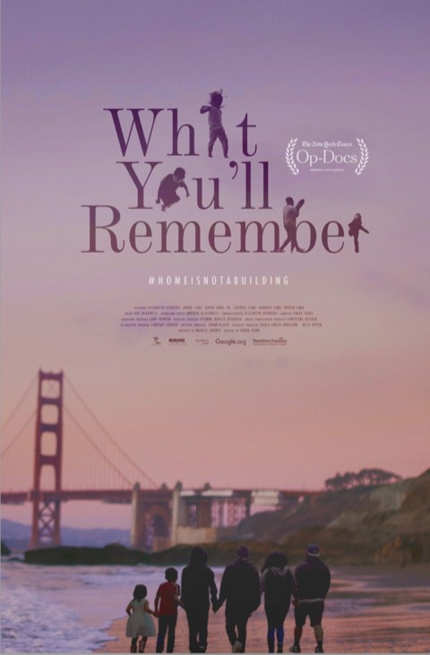
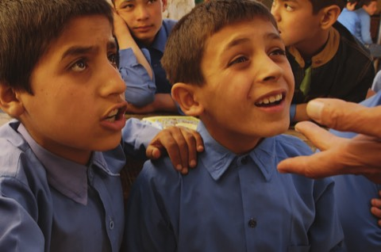

Children & education
Kids, schools, child welfare and abuse.
10 films · 9 sessions · 57 people
Often together with: War, conflict & the militaryMiddle East & South AsiaReligionFunding & distributionCareers & trainingRace & civil rights
Films
- Short Strand: Minneapolis: On the Record + A Special ScreeningLaura Poitras, Rachel Lauren Mueller · Anne Sundberg · Yoruba Richen, Christalyn Hampton2026
 All the Empty RoomsJoshua Seftel2025 · 33 min
All the Empty RoomsJoshua Seftel2025 · 33 min All Static & NoiseDavid Novack2023 · 102 min
All Static & NoiseDavid Novack2023 · 102 min Pray for Our SinnersSinéad O’Shea2022 · 81 min
Pray for Our SinnersSinéad O’Shea2022 · 81 min The New Greatness CaseAnna Shishova-Bogolyubova2022 · 96 min
The New Greatness CaseAnna Shishova-Bogolyubova2022 · 96 min AcceptedCLOSING NIGHT: Accepted2021 · 93 min
AcceptedCLOSING NIGHT: Accepted2021 · 93 min
What You'll RememberWhat You’ll Remember2021 · 12 min
Angels Are Made of LightJames Longley2018 · 117 min Of Fathers and SonsTalal Derki2018 · 99 min
Of Fathers and SonsTalal Derki2018 · 99 min The UnafraidHeather Courtney, Anayansi Prado2018 · 87 min
The UnafraidHeather Courtney, Anayansi Prado2018 · 87 min
Sessions
- 2022 · Fri Oct 14 · 2:00 PMPitchDX Student PitchTe Shima Brennen, In Jeong Kim, Rajvi Desai, Yaakov Gottlieb, Olivia Yarvis, Erica Berenstein, Lauren Feeney, Amanda Pike, Judith Helfand…
- 2022EventDouble Exposure Academy / DX Academy PitchJudith Helfand
- 2021 · Fri Oct 15 · 10:00amPanelSTUDENT PITCHJoseph Singer, Michael Fearon, Gabriella Canal, Yifan Wang, Yunbo Wu, Michaela Vatcheva, Guldana Talgat, Nicole Tsien, Lindsay Poulton…
- 2021 · Wed Oct 13 · 10:00amPanelSame Story, Different ApproachKatie Benner, Dan Chen, Erica Green, Amanda Pike, Jesse Einstein
- 2019 · Thu Oct 10 · 4:00 PMPanel · DX²The UndertowRamona Diaz, Courtney Radsch, Andalusia Knoll Soloff, Nanfu Wang, Brenda Coughlin
- 2018 · Fri Oct 12 · 4:15 PMConversationClosing Conversation: Journeys Across the Abyss in Print and ScreenJames Longley, Shannon Service, Janet Reitman
- 2018 · Thu Oct 11PitchDX Academy Student Pitch
- 2018 · Fri Oct 12 · 4:15pmPanel · DX²Journeys Across the AbyssShannon Service, Janet Reitman, James Longley
- 2017 · Fri Oct 20 · 4:30 PMConversationAnatomy of a Serial: Closing Conversation with Ryan White and Jean Wehner, The KeepersRyan White, Jean Wehner, Gilbert Cruz
People most involved
- James LongleyPanelist, filmmaker · 2018
 Amanda PikePanelist, filmmaker, moderator · 6 editions, 2019–2025The Center for Investigative Reporting
Amanda PikePanelist, filmmaker, moderator · 6 editions, 2019–2025The Center for Investigative Reporting- Judith HelfandPanelist, workshop leader, festival team · 2 editions, 2021–2022Chicken & Egg Pictures
- Heather CourtneyPanelist, filmmaker · 2 editions, 2017–2018
 Conall JonesPanelist, filmmaker · 2025
Conall JonesPanelist, filmmaker · 2025- Shannon ServicePanelist, filmmaker · 2018
- Anayansi PradoFilmmaker · 2018

- Talal DerkiFilmmaker · 2018
- Sinéad O’SheaFilmmaker · 2022
 Michael RezendesPanelist, moderator, workshop leader · 3 editions, 2015–2023
Michael RezendesPanelist, moderator, workshop leader · 3 editions, 2015–2023 Anna Shishova-BogolyubovaFilmmaker · 2022
Anna Shishova-BogolyubovaFilmmaker · 2022 Vasily PolonskyFilm subject, panelist · 2022
Vasily PolonskyFilm subject, panelist · 2022 David NovackFilmmaker, panelist · 2023
David NovackFilmmaker, panelist · 2023- James MillwardModerator · 2023
 Joshua SeftelPanelist, filmmaker · 2025
Joshua SeftelPanelist, filmmaker · 2025- Steve HartmanFilm subject · 2025
- Lou BoppFilm subject · 2025
 Benjamin DuchekModerator · 2025
Benjamin DuchekModerator · 2025- CLOSING NIGHT: AcceptedFilmmaker · 2021
 Laura PoitrasFilmmaker, panelist · 2 editions, 2025–2026
Laura PoitrasFilmmaker, panelist · 2 editions, 2025–2026- Rachel Lauren Mueller · Anne Sundberg · Yoruba RichenFilmmaker, panelist · 2 editions, 2022–2026
 Christalyn HamptonFilmmaker · 2026
Christalyn HamptonFilmmaker · 2026 Bonnie BertramPanelist, filmmaker · 2026
Bonnie BertramPanelist, filmmaker · 2026- What You’ll RememberFilmmaker · 2021
- Ryan WhiteFilmmaker, panelist · 2 editions, 2017–2020
- Jean WehnerPanelist · 2017
- Ramona DiazFilmmaker, panelist · 2 editions, 2019–2020
- Andalusia Knoll SoloffFilmmaker, panelist · 2019
- Nanfu WangPanelist · 2 editions, 2019–2021
 Te Shima BrennenPanelist · 2022
Te Shima BrennenPanelist · 2022